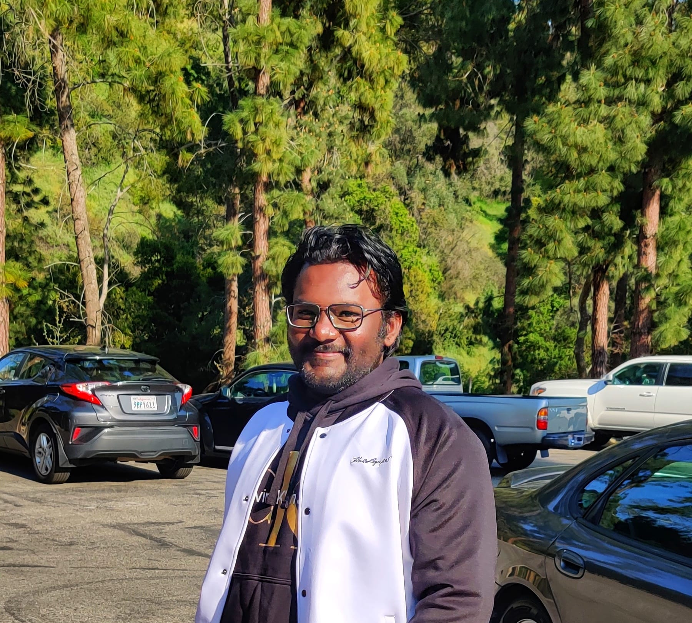
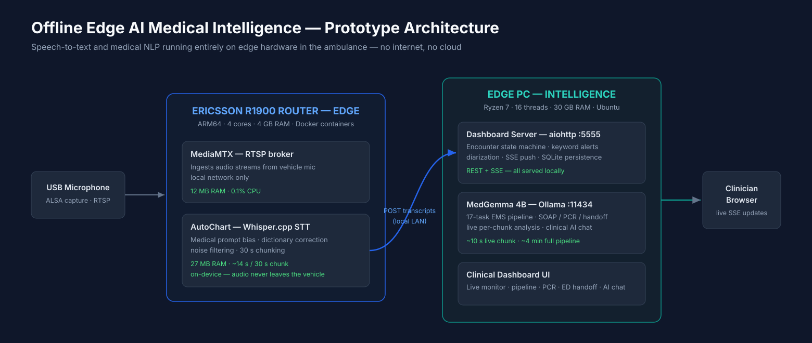
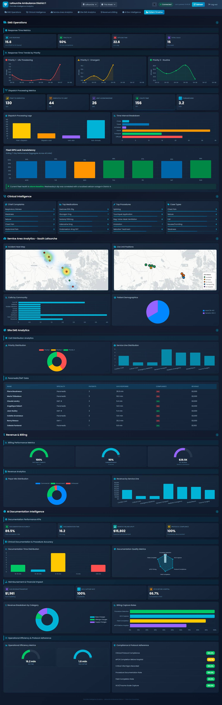
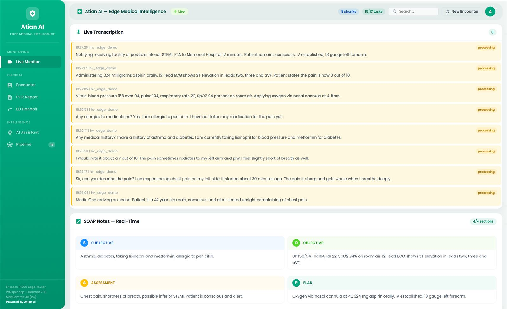
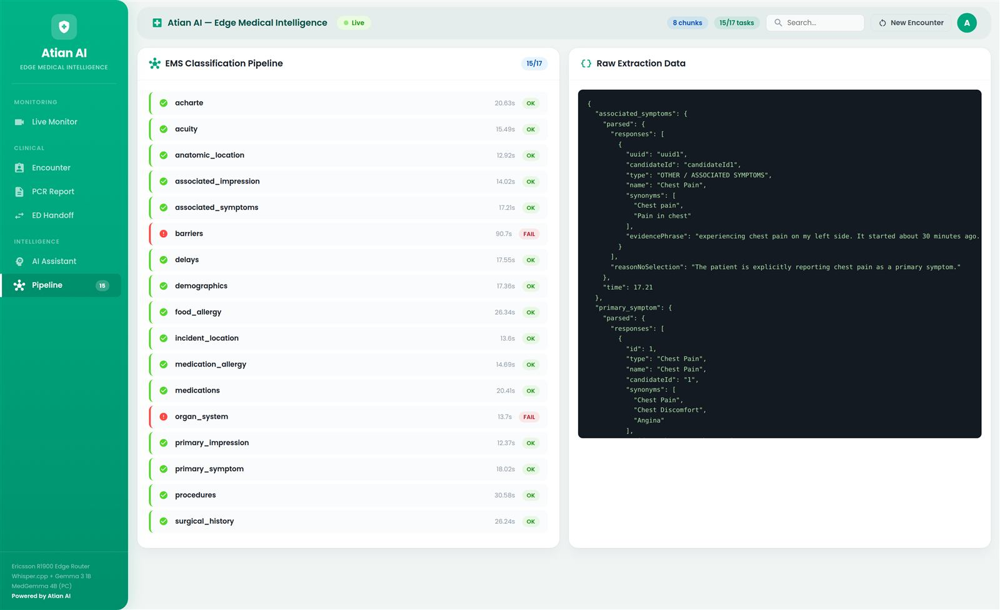
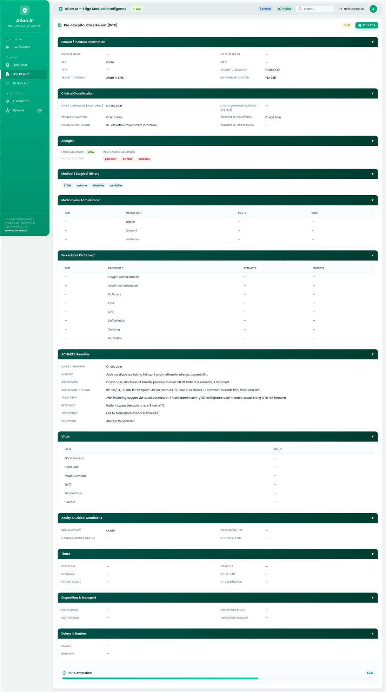
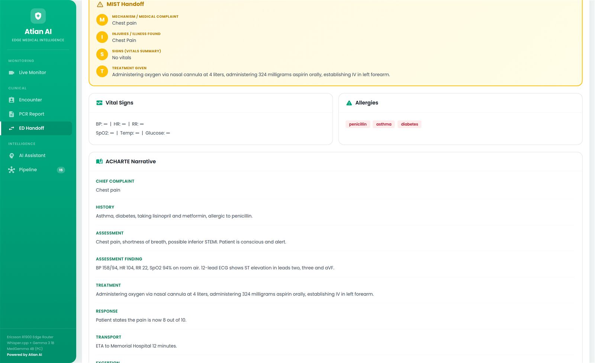

Backend developer with 4+ years shipping production systems for EMS and healthcare — from offline AI running inside ambulances to clinical data pipelines, dispatch telemetry watchers, and Snowflake analytics platforms.

I'm a backend software developer focused on production APIs, edge AI, and healthcare data systems. At Atian.ai I architect end-to-end systems in Java/Spring Boot and Python/FastAPI — NEMSIS 3.5.1 SOAP pipelines, AI-assisted patient care report generation, offline AI deployed on ARM64 devices inside ambulances, Snowflake-backed operations dashboards, and real-time Elasticsearch infrastructure.
Before this I spent two and a half years at Tata Consultancy Services doing automation and infrastructure reliability work — the foundation for how I build now: self-healing services, offline-first design, and test suites that don't need live dependencies. Currently pursuing an M.S. in Computer Science at Jessup University.
The tools behind the systems — backend first, with a deep edge-AI and healthcare-standards streak.
Production APIs and microservices — REST, SOAP, async workflows, schema validation, JWT auth, and XML/JAXB pipelines that survive vendor quirks.
AI that runs where the cloud can't reach — quantized models on ARM64 routers, cross-compiled containers.
The unglamorous standards that make medical data move.
Production-scale automation against systems that were never meant to be automated — undocumented protocols, legacy UIs, safety-gated write paths.
Live production systems, safety-critical automation, and one meditation on civilization. Click any tile for the full case study.

Whisper.cpp + MedGemma 4B running on edge hardware inside an ambulance — real-time clinical documentation with zero internet.

Multi-tenant Snowflake platform for live ambulance districts — six tabs of real-time operations, clinical, and revenue KPIs.
Reverse-engineered a proprietary dispatch feed; self-healing watcher streaming ambulance status changes 24/7.
Safety-gated browser agent pre-filling QA-validated patient charts — every clinical decision stays human.
A meditation on civilization, disguised as a web app. Live in production.
Ambulance crews document patient encounters by hand, after the fact — and field connectivity is too unreliable (and patient audio too sensitive) to depend on the cloud. This prototype runs the entire pipeline on edge hardware inside the vehicle: an Ericsson Cradlepoint R1900 cellular router transcribes crew–patient audio with Whisper.cpp while an edge PC runs MedGemma 4B to generate clinical documentation in real time. No internet, no cloud — patient audio never leaves the vehicle.




Multi-tenant EMS operations platform for live ambulance districts. Six tabs of real-time metrics — scroll the screenshot to see the full build.
Reverse-engineered a proprietary dispatch vendor's feed and built a self-healing, always-on watcher that streams ambulance status changes into a searchable EMS data platform.
/live/health endpointA safety-gated browser agent that turns AI-extracted patient-care data into a pre-filled, QA-validated ePCR chart — cutting EMT documentation time while keeping every clinical decision human.
A meditation on civilization, disguised as a web app. Drop in a photo of any object — a pencil, a sandwich, a digital camera — and an AI vision-and-reasoning pipeline writes a monograph on what it would actually take to make it from scratch, alone: the mining, forestry, chemistry, and centuries of accumulated human knowledge behind the simplest things. Finished analyses are collected in a public "Library of Uncovered Objects," and the whole application can also run fully offline with local open-source models — adhering to the same conditions as the question itself.
Java/Spring Boot pipeline turning EMS audio into XSD-compliant SOAP submissions — GPT extraction, ICD-10/RxNorm/SNOMED mapping, on Kubernetes.
atian.ai →Python NLP pipeline scoring EMS documentation consistency — Sentence Transformers, hallucination detection, automated QA artifacts.
atian.ai →Caesar, monoalphabetic, and homophonic cipher implementations in Java.
github →Java game built on StdDraw with built-in play analytics.
github →Open to backend, edge AI, and platform roles — or just a good conversation about systems that have to keep working offline.